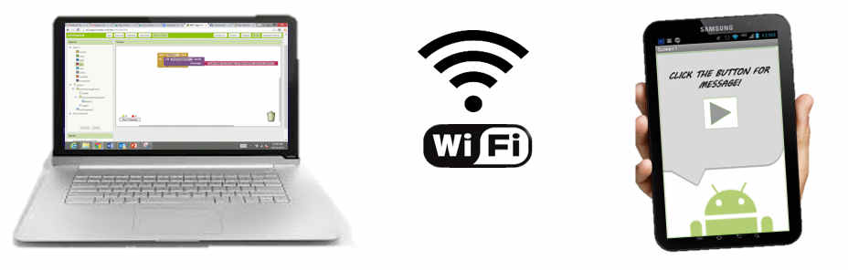

1. Instalación
Para diseñar aplicaciones solamente es necesario el uso de un navegador, que tiene que ser Google Chrome, Safari o Firefox. Internet Explorer no es compatible con App Inventor. Además se requiere disponer de una cuenta de gmail.
Los proyectos se almacenan en los servidores del MIT. Por lo que se puede accederse desde cualquier ordenador. Pero la prueba de las Apps sí requiere instalación de software.
- Si estás utilizando un dispositivo Android y tienes una conexión inalámbrica a Internet (WiFi), puedes comenzar la creación de aplicaciones sin necesidad de descargar ningún software en tu ordenador. Eso sí, tendrás que instalar la aplicación Companion App Inventor en tu dispositivo. Esta opción es la recomendada.
- Si no tienes un dispositivo Android, tendrás que instalar el software en el ordenador para que pueda utilizar el emulador de Android en la pantalla del mismo.
- Si no tienes una conexión inalámbrica a Internet (WiFi), tendrás que instalar el software en tu ordenador de modo que puedas conectar a su dispositivo Android a través de USB.
- Aparecerá un diálogo con un código QR. En tu dispositivo, ejecuta la app MIT App Companion tal como lo harías con cualquier otra app. A continuación click sobre el botón “Scan QR code” y escanea el código.
Opción 1. WiFi
Puedes usar App Inventor sin necesidad de descargar e instalar nada en tu ordenador.

- Descarga e instala la App MIT AI2 Companion en tu teléfono o tableta.
- Conecta tu ordenador y tu dispositivo a la misma red WiFi.
- Vete a App Inventor y abre un proyecto (o crea uno nuevo). Entonces elige "Connectar" y "AI Companion" en el menú principal.
Opción 2. Instalar y ejecutar el emulador en AI2
Si no tienes un teléfono o tableta Android, igualmente puedes construir aplicaciones con App Inventor. App Inventor proporciona un emulador de Android, que funciona igual que un Android, pero aparece en la pantalla tu ordenador. Así que también puedes probar tus aplicaciones en el emulador y distribuir tus aplicaciones a los demás, incluso a través de la Play Store.
- Descarga y ejecuta el programa de instalación del software App Inventor. Instrucciones para Windows
- Inicia aiStarter. Este programa permite que el navegador se comunique con el emulador.
- Desde el menú de App Inventor, vete al menú Conectar y haz clic en la opción Emulador.
El emulador inicialmente aparecerá con una pantalla negra. Espera hasta que el emulador está listo, con un fondo de pantalla en color. Incluso después de que aparezca el fondo, deberá esperar hasta que el teléfono emulado ha terminado de preparar su tarjeta SD: habrá un aviso en la parte superior de la pantalla del teléfono mientras se prepara la tarjeta.
Opción 3. USB
Para conectar con USB, es necesario instalar primero el software de configuración de App Inventor en el equipo. Además serán necesarios los drivers del dispositivo Android.
- Ejecuta el programa de instalación del software App Inventor. Instrucciones para Windows
- Descargar e instalar la App MIT AI2 Companion en el teléfono.
- Inicia aiStarter.
- Configurar el dispositivo para USB (Poner el dispositivo en modo depuración USB).
- Conecta el ordenador y el dispositivo, y autentifica si es necesario.
- Desde el menú de App Inventor, vete al menú Conectar y haz clic en la opción USB.
Asegúrate de que el dispositivo se conecta como un "dispositivo de almacenamiento masivo" (no "dispositivo multimedia") y que no se monta como una unidad en el ordenador.
Obra publicada con Licencia Creative Commons Reconocimiento Compartir igual 4.0